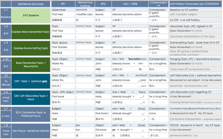
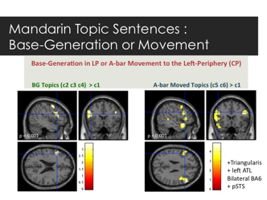

Cerebral encoding of syntactic-levels in the Mandarin Chinese
Left-Periphery: insights from fMRI
Murielle FABRE, INALCO, CRLAO (CNRS UMR 8563, INALCO/EHESS) &
Collège de France - Chaire de Psychologie cognitive expérimentale & Cognitive
Neuroimaging Unit of INSERM U992 (UNICOG, NeuroSpin – CEA)
In the last two
decades, a variety of approaches using brain-imaging methods have sought to
characterize the regions implicated in syntactic processes to reveal part of
the neural organization of language, a key issue for the origins and
development of human language. Recent quantitative neuropsychological data have
proven to support the linguistic hypothesis that words in a sentence are
combined into hierarchical structures, pinpointing a perisylvian network of
regions - encompassing inferior frontal regions and temporal ones - implied in
the sentence structure processing (Pallier et al., 2011). However, the detailed
view of which brain region codes for the different aspects of the sentence
structure, and how the human brain computes and represents syntactic structures
remain two open questions.
The actual
state of the art is compelling researchers to deepen their understanding of the
cerebral encoding of the different levels of linguistic representation and of
the complexity parameters of sentence tree structure. Sentence hierarchical
structure building is questioned by investigating experimentally the encoding
of syntactic representation of the Chinese Left-Periphery and of syntactic
movement. The central point of the current fMRI experiment (functional Magnetic
Resonance Imaging study with 20 Mandarin native speakers), is that sentence
domains including sentence Left-Periphery (e.g. [CP [IP [VP]]]) might be an
important complexity parameter to be considered in order to understand sentence
cerebral encoding.
Previous
typological and formal research on the syntax of the Mandarin Left-Periphery (see
Topic and Focus literature : Badan 2008 ; Badan & Del Gobbo 2011 and 2015 ;
Paul 2002, 2005, 2015 ; Shyu 1995 and 2001, and others) offers rich testing
hypothesis to focus on the processing and cerebral encoding of the syntactic
representation-levels present in Topic-Comment articulation, Focus, and more
particularly on the properties of the sentence-initial Topic field, and on the
contrastive interpretation of preposed objects.
Chinese
Topic-Comment articulations are in fact the ideal testing-ground to investigate
sentence hierarchical structure without the presence of overt functional
elements (i.e. topic heads, although Mandarin Chinese might have some) and to
investigate Topic-Comment articulations that are not generated through
syntactic movement (i.e. Left-Dislocation/Topicalisation in condition c6 vs.
Base-Generation for sentences with no movement analysis in conditions c2, c3,
c4, see Table 1). Not only is the prevalence of Topic-Comment structures a
typological very distinctive feature of Mandarin Chinese, but it was also shown
that young children in the early stages of syntax acquisition have the ability
to distinguish between the notions of subject and topic (Chien, 1983). Moreover,
from a more formal point of view the traditionally labeled topic-prominence
parameter can be reinterpreted by admitting that in the T-C articulation
Topic projection’s functional head is not filled by movement, but via an other
syntactic process, namely External Merge (i.e. Base-Generation).
The issue of
the informational value of topic is addressed by comparing brain activation for
Scene-Setting Topic condition (c3) where the first DP plays the role of an
adverbial frame localizing the following Comment clause, with (c2) and (c1) SVO
Baseline conditions, which differ minimally in terms of lexical material (i.e.
contrast c3/c2 > c1 only the first NP differs, see Table 1).

Table 1 Detailed
experimental design of the fMRI Experiment on Chinese Left-Periphery. The
experimental design aims at directly contrasting the brain activation related
to these eight conditions.
In addition to
the previous contrasts, this experiment also attempts to tackle the broader
question of the cerebral encoding of dependency links inside the sentence that
has undergone syntactic movement transformations. This dependency can be
achieved by overt or non-overt linguistic means, and Chinese offers an
interesting and particular configuration where animacy gives rise to a more or
less overt realization of the object constituent in the Comment clause,
preserving the same surface word order. The very minimal contrast between c4
condition and c5 (see Table 1) allows to observe the difference between a
coreference link achieved by means of an overt Resumptive (c4), Base-Generated
Topic with resumptive [OiSV + resumptivei] or by a non-overt
linguistic mean in (c5), a trace [OiSV + tracei], i.e.
[Topici + S + V + tracei].
Chinese
left-periphery properties present also the opportunity to obtain a contrastive
interpretation without moving constituents to the Left-Periphery: in cases of
sentence-internal lian-Focus (c8) and of preposed object (c7). Namely, this
property allows the decorrelation of pragmatic and contrastive interpretation
from the position in the Left-Periphery: c7 and c8 have a strong Pragmatic and
contrastive interpretation without being moved to the LP.
Group-level
analyses reveal different brain maps for the above cited different contrasts. Interestingly,
Broca subpart Pars Triangularis is involved in the processing of Topic-Comment
vs. SVO baseline (c2 > c1), Temporal Pole and Inferior Frontal Gyrus are
involved in Object fronting through topicalisation, Base generation vs. A-bar
movement to the Left-Periphery elicit a different set of brain areas (see
Figure 1), and, last but not least, contrastiveness feature and lian-Focus elicit
among other areas also posterior Superior Temporal Sulcus (pSTS) activations.

Figure 1 Base
generation vs. A-bar movement to the Left-Periphery elicit a different set of
brain areas.
To conclude,
leveraging on fine-grained linguistic analyses of the Chinese Left-Periphery –
both from typological and formal perspective – the present pluridisciplinary
approach aims at investigating experimentally through neuro-imaging techniques
the issue of the cerebral representation of Topic and Focus in Mandarin Chinese
and of the hierarchical organization of sentence in the Left-Periphery.